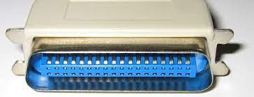

Un puerto paralelo es una interfaz entre un computador y un periférico, cuya principal característica es que los bits de datos viajan juntos, enviando un paquete de byte a la vez. Es decir, se implementa un cable o una vía física para cada bit de datos formando un bus. Mediante el puerto paralelo podemos controlar también periféricos como focos, motores entre otros dispositivos.
El cable paralelo es el conector físico entre el puerto paralelo y el dispositivo periférico. En un puerto paralelo habrá una serie de bits de control en vías aparte que irán en ambos sentidos por caminos distintos.
En contraposición al puerto paralelo está el puerto serie, que envía los datos bit a bit por el mismo hilo.